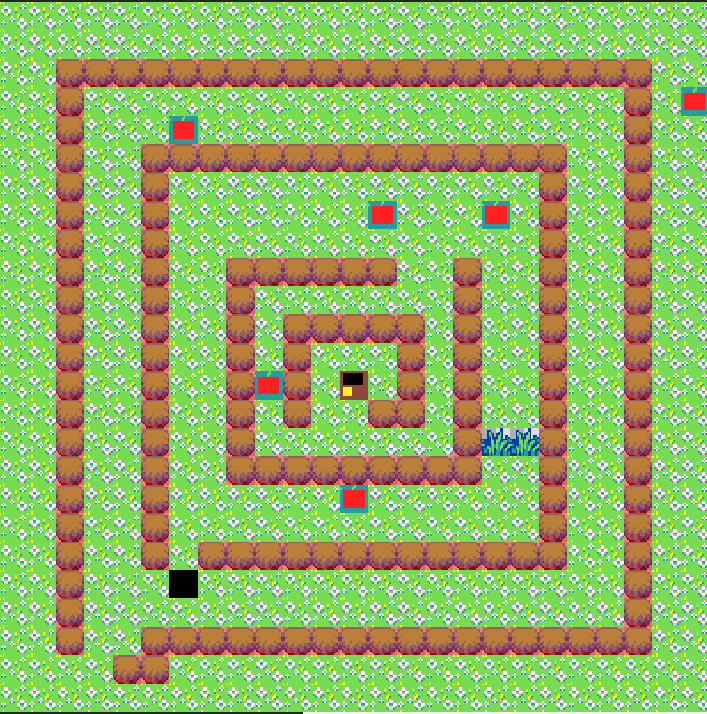
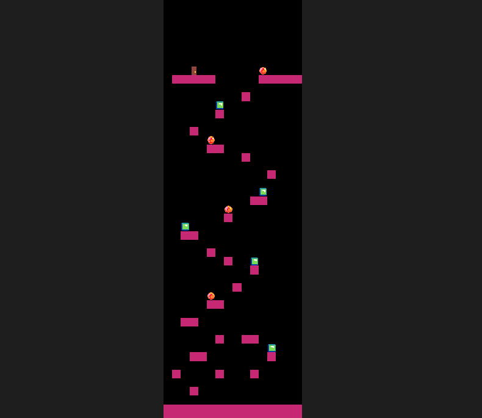

| Mapa honetan janaria hartu jan behar duzu markagailua gora egiteko, 6 puntu baino gehiago duzunean joan dezakezu beste mapara, mamuak hil ditzazkezu puntu gehiago edukitzeko, X-rekin projektilak jaurtitzen dituzu mamuak hiltzeko eta sahiatu mamuak zuri ez ikutzea bestela bizitzak jaitsi egingo dira. |
 |
| Mapa honetan, mamuak ez daude baino trampa batxuk jarri ditu, jamaria berdea jan egin behar duzu markagailua gora egiteko, laranja jaten baldin baduzu bizitza kentzen dizu eta behetik hasten zea berriro. Salto egiteko espazioarekin egiten da, mugitzeko aldeko geziekin. |
 |